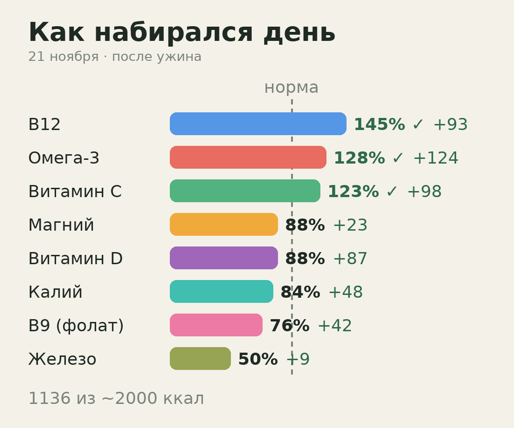

Так это выглядит в Telegram
Пишешь как другу – бот отвечает карточкой: продукты с граммами, калории и всё, что кроме них.
на завтрак два бутерброда с сёмгой и сливочным сыром
Сёмга со сливочным сыром на завтрак – это всегда маленькое торжество вкуса. Отличный старт выходного дня.
🍳 Что съедено на завтрак
• Хлеб ~60 г
• Сливочный сыр ~40 г
• Сёмга слабосолёная ~60 г
всего ~160 г · порция на глаз
🔥 370 ккал · Б 19 г · Ж 22 г · У 26 г🌾 Клетчатка 2,5 г · 🧂 Соль 1,6 г
▣ эта еда · кубик – 10% нормы
B12 · 83%Омега-3 · 54%
Витамин D · 36%
✨ Астаксантин из лосося
Завтрак дал больше половины дневной нормы витамина B12 – заметная доля для одного приёма.
Как это работает
Одна фраза – и бот разложит еду по граммам и витаминам.
-
Пишешь или говоришьна завтрак овсянка 250 г на молоке с бананом, горстью кешью и грецких орехов и ложкой мёда
-
Бот разложил по продуктам
- Овсянка на молоке 250 г
- Молоко 100 мл
- Банан 100 г
- Кешью 15 г
- Грецкие орехи 15 г
- Мёд 20 г
-
И посчитал, что внутри
558 ккалБ 17 · Ж 20 · У 78 г
🛒 А потом подскажет, что съесть и что купить, чтобы добрать
Что ещё видно
Всё по кнопке, когда захочется.



- ☀️Утром – итог вчерашнего дня
- 📅Неделя – таблицей
- 💧Вода и добавки – там же
- 📲День – в «Здоровье» на iPhone
- 🔎В любом чате: @nu_triton_bot гречка
- 📤Выгрузка таблицей за 30 дней
Вопросы и ответы
Как узнать, сколько витаминов и минералов в еде?
Написать боту @nu_triton_bot в Telegram, что было на тарелке, – он покажет витамины и минералы в процентах от дневной нормы. Всего 25 нутриентов: 11 минералов, 13 витаминов и омега-3.
По каким нормам считает бот?
По официальным нормам 2021 года – МР 2.3.1.0253-21; они опираются на рекомендации ВОЗ и ФАО и учитывают пол и вес. Проценты считает код, а не нейросеть: одна и та же еда всегда даёт один процент.
Насколько точные цифры?
Это оценка. Простые продукты бот считает по официальным таблицам состава, сложные блюда оценивает ИИ – погрешность 15–25%. Поэтому важнее среднее за неделю, чем один день.
Нужно ли взвешивать еду?
Нет: достаточно написать «тарелка борща» – порцию бот оценит сам. Если вес известен, назови его: названные граммы важнее оценки.
Это бесплатно?
Пока да: бесплатно и без рекламы, начать можно сразу. Бот работает на бесплатных нейросетях, поэтому иногда думает секунд двадцать.
Можно ли выгрузить данные?
Да: команда /export присылает таблицу за 30 дней, а на iPhone день переносится в приложение «Здоровье». Удалить всё – команда /delete_me.
Это медицинский сервис?
Нет: бот оценивает, что пришло с едой, а не что происходит в организме. Диагнозов он не ставит, добавки и дозировки не назначает.
Какой бот в Telegram считает витамины?
Нутритон – в Telegram «Ну тритон», @nu_triton_bot. Это дневник питания, который считает не только калории, но и витамины с минералами.
Что было на обед?
Напиши или наговори боту – покажет, что в нём, кроме калорий.
Например: на обед борщ и два куска хлеба
- 🛒 Что съесть и что купить
- 🛡 Нормы на основе ВОЗ
- 🎙 Весь день – одним голосовым
или найди @nu_triton_bot